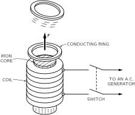

Материалы главы
Сгенерированные учебные материалы NotebookLM для этой главы.
16. Индуцированные токи
16–1 Моторы и генераторы#
Открытие тесной связи между электричеством и магнетизмом, происшедшее в 1820 г., было поистине волнующим событием — ведь до того они считались совершенно независимыми. Сначала открыли, что токи в проводах создают магнитные поля, а затем в том же году обнаружили, что на провода в магнитном поле действуют силы.
Одним из волнующих моментов при возникновении механической силы является возможность использовать ее в машине для выполнения какой-то работы. Сразу же после этого замечательного открытия люди начали конструировать электромоторы, заставив работать на себя силы, действующие на провода с током. Принцип устройства электромотора схематически показан на фиг. 16.1. Постоянный магнит (обычно в нем имеется несколько частей из мягкого железа) создает магнитное поле внутри двух щелей. Конец каждой щели представляет собой северный или южный полюсы, как показано на схеме. Прямоугольная рамка из медной проволоки помещается так, что одной из своих сторон она попадает в каждую щель. Когда по рамке проходит ток, то в обеих щелях он идет в противоположных направлениях, так что силы оказываются направленными противоположно и создают в рамке вращательный момент вокруг изображенной на схеме оси. Если рамка закреплена на оси так, что она может вращаться, то ее можно подсоединить к шкивам или шестеренкам и заставить производить полезную работу.

Ту же идею можно использовать и при конструировании чувствительных приборов для электрических измерений. Так что немедленно после открытия закона сил точность электрических измерений намного возросла. Прежде всего вращательный момент такого мотора может быть значительно увеличен для данного тока, если заставить его проходить по нескольким виткам, а не по одному. Кроме того, рамку можно установить так, чтобы она вращалась под действием очень малого момента, укрепив ее ось в тщательно сделанных подшипниках, либо подвешивая ее на тончайшей проволоке или кварцевой нити. Тогда даже чрезвычайно слабый ток заставит катушку повернуться, и для малых углов величина поворота будет пропорциональна току. Угол поворота можно измерить, приклеив к рамке стрелку или (для очень тонких приборов) прикрепив маленькое зеркальце к рамке и отмечая сдвиг его изображения на шкале. Такие приборы называют гальванометрами. Вольтметры и амперметры работают по тому же принципу.
Те же идеи могут быть применены в большом масштабе для создания мощных моторов, производящих механическую работу. Рамку можно заставить вращаться много, много раз, если с помощью укрепленных на оси контактов каждые пол-оборота менять направление тока в ней на противоположное. Тогда момент силы будет всегда направлен в одну и ту же сторону. Маленькие моторчики постоянного тока именно так и устроены. В моторах больших размеров постоянного или переменного тока постоянные магниты часто заменяют электромагнитами, и питаются они от источника электрической энергии.
Осознав, что электрический ток рождает магнитное поле, многие сразу же предположили, что так или иначе магниты должны тоже создавать электрические поля. Для проверки этого предположения были поставлены различные эксперименты. Например, располагали два провода параллельно друг другу и по одному из них пропускали ток, пытаясь обнаружить ток в другом проводе. Мысль заключалась в том, что магнитное поле сможет как-то протащить электроны вдоль второго провода по закону, который должен формулироваться как-то так: «одинаковое стремится двигаться одинаковым образом». Но, пропуская по одному проводу самый большой ток и используя самый чувствительный гальванометр, обнаружить ток во втором проводе не удалось. Большие магниты тоже не давали никакого эффекта в расположенных поблизости проводах. Наконец, в 1840 г. Фарадей открыл существенную особенность, которую раньше упускали из виду, — электрические эффекты возникают только тогда, когда что-нибудь изменяется. Если в одной из двух проволок ток меняется, то в другой тоже наводится ток, или же если магнит движется вблизи электрического контура, то там возникает ток. Мы говорим теперь, что токи в этих случаях индуцируются. В этом и состояло явление индукции, открытое Фарадеем. Оно преобразило довольно скучную область статических полей в увлекательную динамическую область, в которой происходит огромное число удивительных явлений. Эта глава посвящена качественному описанию некоторых из них. Как мы увидим, можно довольно быстро попасть в очень сложные ситуации, трудно поддающиеся подробному количественному анализу. Но это неважно. Наша главная задача в этой главе — сначала познакомить вас с кругом относящихся сюда явлений. Тщательный анализ мы проделаем немного позже.
Из того, что мы уже знаем, нам легко понять кое-что о магнитной индукции, то, что не было известно во времена Фарадея. Мы знаем о существовании действующей на движущийся заряд силы \mathbf{v}\times\mathbf{B}, которая пропорциональна его скорости в магнитном поле. Пусть у нас есть проволока, которая движется вблизи магнита, как показано на фиг. 16.2, и пусть мы подсоединили концы проволоки к гальванометру. Когда мы двигаем проволоку поперек полюса магнита, стрелка гальванометра сдвигается.
Магнит создает вертикальное магнитное поле, и, когда мы двигаем проволоку поперек поля, электроны в проволоке чувствуют силу, направленную вбок, т. е. перпендикулярно полю и направлению движения. Сила толкает электроны вдоль проволоки. Но почему же при этом приходит в движение стрелка гальванометра, который расположен так далеко от этой силы? Да потому, что электроны, испытывающие магнитную силу, начинают двигаться и толкают (за счет электрического отталкивания) другие электроны, находящиеся чуть дальше по проволоке, а те в свою очередь отталкивают еще более удаленные электроны и так далее на большое расстояние. Любопытная штука.
Это так удивило Гаусса и Вебера, построивших впервые гальванометр, что они попытались определить, как далеко распространяются силы по проволоке. Они протянули проволоку поперек всего города, и один ее конец Гаусс присоединил к батарее (батареи были известны раньше генераторов), а Вебер наблюдал, как сдвигается стрелка гальванометра. И они обнаружили способ передавать сигналы на большое расстояние— это было рождение телеграфа! Разумеется, здесь нет прямого отношения к индукции, здесь речь шла о способе передачи тока по проволоке, о том, действительно ли ток продвигается за счет индукции или нет.

Предположим теперь, что в установке, изображенной на фиг. 16.2, мы проволоку оставляем в покое, а двигаем магнит. И снова наблюдаем эффект на гальванометре. Фарадей еще обнаружил, что движение магнита под проволокой (один способ) вызывает такой же эффект, как и движение проволоки над магнитом (другой способ). Но когда движется магнит, то на электроны проволоки уже больше не действует сила \mathbf{v}\times\mathbf{B}. Это и есть то новое явление, которое открыл Фарадей. Сегодня мы можем попытаться понять его с помощью принципа относительности.
Мы уже знаем, что магнитное поле магнита возникает за счет его внутренних токов. Поэтому мы ожидаем появления такого же эффекта, если вместо магнита на фиг. 16.2 взять катушку из проволоки, по которой течет ток. Если двигать провод мимо катушки, то гальванометр обнаружит ток, равно как и в том случае, когда катушка движется мимо провода. Но существует и еще более удивительная вещь: если менять магнитное поле катушки не за счет ее движения, а за счет изменения в ней тока, то гальванометр снова покажет наличие эффекта. Например, если расположить проволочную петлю рядом с катушкой (фиг. 16.3), причем обе они неподвижны, и выключить ток, то через гальванометр пройдет импульс тока. Если же снова включить ток в катушке, то стрелка гальванометра качнется в противоположную сторону.

Всякий раз, когда через гальванометр в установке, показанной на фиг. 16.2 или 16.3, проходит ток, в проводе в каком-то одном направлении возникает результативное давление на электроны. В разных местах электроны могут толкнуться в разные стороны, но в одном направлении напор оказывается больше, чем в другом. Учитывать нужно только давление электронов, просуммированное вдоль всей цепи. Мы называем этот результирующий напор электронов электродвижущей силой (сокращенно э. д. с.) цепи. Более точно э. д. с. определяется как тангенциальная сила, приходящаяся на один заряд, проинтегрированная по длине провода, вдоль всей цепи. Открытие Фарадея целиком состояло в том, что э. д. с. в проводе можно создать тремя способами: двигая провод, двигая магнит вблизи провода или меняя ток в соседнем проводе.
Обратимся снова к простому прибору, изображенному на фиг. 16.1, только теперь не будем пропускать ток через проволоку, чтобы придать ей вращение, а будем крутить рамку с помощью внешней силы, например рукой или с помощью водяного колеса. При вращении рамки ее провода движутся в магнитном поле, и мы обнаруживаем в цепи рамки э. д. с. Мотор превратился в генератор.
Индуцированная э. д. с. возникает в катушке генератора за счет ее движения. Величина э. д. с. дается простым правилом, открытым Фарадеем. (Сейчас мы просто сформулируем это правило, а несколько позднее разберем его подробно.) Правило такое: если магнитный поток, проходящий через петлю (этот поток есть нормальная составляющая \mathbf{B}, проинтегрированная по площади петли), меняется со временем, то э. д. с. равна скорости изменения потока. Мы будем в дальнейшем называть это «правилом потока». Вы видите, что, когда катушка на фиг. 16.1 вращается, поток через нее изменяется. Вначале, скажем, поток идет в одну сторону, а когда катушка повернется на 180^\circ, тот же поток идет сквозь катушку по-другому. Если непрерывно вращать катушку, поток сначала будет положительным, затем отрицательным, потом опять положительным и т. д. Скорость изменения потока должна тоже меняться. Следовательно, в катушке возникает переменная э. д. с. Если присоединить два конца катушки к внешним проводам через скользящие контакты, которые называются контактными кольцами (просто, чтобы провода не перекручивались), мы получаем генератор переменного тока.
А можно с помощью скользящих контактов устроить и так, чтобы через каждые пол-оборота соединение между концами катушки и внешними проводами становилось противоположным, так что когда э. д. с. изменит свой знак, то и соединение станет противоположным. Тогда импульсы э. д. с. будут всегда толкать ток в одном направлении вдоль внешней цепи. Мы получаем так называемый генератор постоянного тока.
Прибор, изображенный на фиг. 16.1, может быть либо мотором, либо генератором. Связь между моторами и генераторами хорошо демонстрируется с помощью двух одинаковых «моторов» постоянного тока с постоянными магнитами, катушки которых соединены двумя медными проводами. Если ручку одного из «моторов» поворачивать механически, он становится генератором и приводит в движение второй как мотор. Если же поворачивать ручку второго, то генератором уже становится он, а первый работает как мотор. Итак, здесь мы встречаемся с интересным примером нового рода эквивалентности в природе: мотор и генератор эквивалентны. Количественная эквивалентность на самом деле не совсем случайна. Она связана с законом сохранения энергии.
Другой пример устройства, которое может работать либо для создания э. д. с., либо воспринимать действие э. д. с., представляет собой приемная часть обычного телефона, т. е. «слухофон». Первоначальный телефон Белла состоял из двух таких «слухофонов», соединенных двумя длинными проводами. Основной принцип этого устройства показан на фиг. 16.4. Постоянный магнит создает магнитное поле в двух сердечниках из мягкого железа и в тонком железном диске — мембране, которая приводится в движение звуковым давлением. При движении мембрана изменяет величину магнитного поля в сердечниках. Следовательно, поток через катушку проволоки, намотанной вокруг одного из сердечников, изменяется, когда звуковая волна попадает на мембрану. Тогда в катушке возникает э. д. с. Если концы катушки присоединены к цепи, в ней устанавливается ток, который представляет собой электрическое изображение звука.

Если концы катушки на фиг. 16.4 присоединить двумя проводами к другому такому же устройству, то по второй катушке потечет меняющийся ток. Этот ток создаст меняющееся магнитное поле и заставит меняться силу притяжения железной мембраны. Она начнет дрожать и породит звуковые волны, подобные тем, которые колебали первую мембрану. С помощью маленьких кусочков железа и меди человеческий голос передается по проводам!
(В современных домашних телефонах используются приемники, подобные только что описанному, однако для получения большей мощности применяются усовершенствованные передатчики. Это так называемые «угольные микрофоны», в которых звуковое давление изменяет электрический ток от батареи.)
16–2 Трансформаторы и индуктивности#
Одна из наиболее интересных сторон открытий Фарадея заключается совсем не в том, что э. д. с. возникает в движущейся катушке — это мы можем понять с помощью магнитной силы q\mathbf{v}\times\mathbf{B}, — а в том, что изменение тока в одной катушке создает э. д. с. во второй катушке. И уж совсем удивительно, что величина э. д. с., наведенной во второй катушке, дается тем же самым «правилом потока»: э. д. с. равна скорости изменения магнитного потока сквозь катушку. Возьмем, например, две катушки, каждая из которых намотана на отдельную стопку железных пластинок (с их помощью можно создать более сильные магнитные поля), как показано на фиг. 16.5. Присоединим теперь одну из катушек — катушку а — к генератору переменного тока. Непрерывно меняющийся ток создает непрерывно меняющееся магнитное поле. Такое изменяющееся магнитное поле генерирует переменную э. д. с. во второй катушке — катушке b. Эта э. д. с., например, способна заставить гореть электрическую лампочку.

Э. д. с. в катушке b меняется с частотой, конечно, равной частоте первого генератора. Но ток в катушке b может быть больше или меньше тока в катушке a. Ток в катушке b зависит от индуцированной в ней э. д. с. и от сопротивления и индуктивности остальной части ее цепи. Эта э. д. с. может быть меньше э. д. с. генератора, если, скажем, изменение потока мало. Или же э. д. с. в катушке b может оказаться много больше э. д. с. генератора, если на катушку b навить много витков, ибо в этом случае в данном магнитном поле поток через катушку будет больше. (Можно, если хотите, сказать об этом иначе — в каждом витке э. д. с. одна и та же, и поскольку полная э. д. с. равна сумме э. д. с. отдельных витков, то большое число витков в совокупности создает большую э. д. с.)
Такая комбинация двух катушек (обычно с набором железных пластинок, повышающих магнитное поле) называется трансформатором. Он может «трансформировать» одну э. д. с. (называемую еще «напряжением») в другую.
Эффекты индукции возникают и в одной отдельной катушке. Например, в установке, изображенной на фиг. 16.5, меняющийся поток проходит не только через катушку (b), которая зажигает лампочку, но и через катушку (а). Меняющийся ток в катушке (а) создает меняющееся магнитное поле внутри нее самой, и поток этого поля непрерывно изменяется, так что в катушке (а) получается самоиндуцированная э. д. с. Э. д. с., действующая на ток, возникает тогда, когда его собственное магнитное поле растет, или в общем случае, если его собственное поле изменяется каким угодно образом. Этот эффект называется самоиндукцией.
Когда мы ввели «правило потока», утверждающее, что э. д. с. равна скорости изменения потока, мы не определяли направление э. д. с. Существует простое правило (называемое правилом Ленца) для определения направления э. д. с.: э. д. с. стремится препятствовать всякому изменению потока. Иначе говоря, направление наведенной э. д. с. всегда такое, что, если бы ток пошел в направлении э. д. с., он создал бы поток поля \mathbf{B}, препятствующий изменению поля \mathbf{B}, создающего эту э. д. с. Правилом Ленца можно пользоваться, чтобы найти направление э. д. с. в генераторе, показанном на фиг. 16.1, или в обмотке трансформатора (фиг. 16.3).
В частности, если ток в отдельной катушке (или в любом проводе) меняется, возникает «обратная» э. д. с. в цепи. Эта э. д. с. действует на заряды, текущие в катушке (а) на фиг. 16.5, препятствуя изменению магнитного поля, и поэтому направлена так, чтобы препятствовать изменению тока. Она стремится сохранить ток постоянным; э. д. с. противоположна току, когда ток увеличивается, и направлена по току, когда он уменьшается. При самоиндукции ток обладает «инерцией», потому что эффекты индукции стремятся сохранить поток постоянным точно так же, как механическая инерция стремится сохранить скорость тела неизменной.

Любой большой электромагнит обладает большой самоиндукцией. Пусть, например, к катушке большого электромагнита присоединена батарея (фиг. 16.6) и пусть установилось большое магнитное поле. (Ток достигает постоянной величины, определяемой напряжением батареи и сопротивлением провода катушки.) Но теперь предположим, что мы пытаемся отсоединить батарею, разомкнув выключатель. Если бы мы на самом деле разорвали цепь, ток быстро уменьшился бы до нуля и в процессе уменьшения создал бы огромную э.д.с. В большинстве случаев такой э.д.с. оказывается вполне достаточно, чтобы образовалась вольтова дуга между разомкнутыми контактами выключателя. Возникающее большое напряжение могло бы нанести вред изоляции катушки — да и вам, если бы именно вы размыкали выключатель! По этим причинам электромагниты обычно включают в цепь примерно так, как показано на фиг. 16.6. Когда переключатель разомкнут, ток не меняется быстро, а продолжает течь через лампу, оставаясь постоянным за счет э.д.с. от самоиндукции катушки.
16–3 Силы, действующие на индуцируемые токи#

Вы, вероятно, наблюдали великолепную демонстрацию правила Ленца с помощью приспособления, изображенного на фиг. 16.7. Это электромагнит точно такой же, как катушка а на фиг. 16.5. На одном конце электромагнита помещается алюминиевое кольцо. Если с помощью переключателя подсоединить катушку к генератору переменного тока, то кольцо взлетает в воздух. Силу, конечно, порождают токи, индуцируемые в кольце. Тот факт, что кольцо отлетает прочь, показывает, что токи в нем препятствуют изменению поля, проходящего через кольцо. Когда у магнита северный полюс находится сверху, индуцированный ток в кольце создает внизу северный полюс. Кольцо и катушка отталкиваются точно так же, как два магнита, приложенные одинаковыми полюсами. Если в кольце сделать тонкий разрез по радиусу, сила исчезает — убедительное доказательство того, что она действительно обусловлена токами в кольце.
Если вместо кольца у края электромагнита, показанного на фиг. 16.7, поместить алюминиевый или медный диск, то и он отталкивается; индуцированные токи циркулируют в материале диска и снова вызывают отталкивание.
Интересный эффект, в основе похожий на предыдущий, возникает с листом идеального проводника. В «идеальном проводнике» ток совсем не встречает сопротивления. Поэтому возникшие в нем токи могут течь не переставая. Фактически малейшая э. д. с. создала бы сколь угодно большой ток, а это на самом деле означает, что в нем вообще не может быть э. д. с. Любая попытка создать магнитный поток, проходящий сквозь такой лист, вызовет токи, образующие противоположно направленные \mathbf{B} поля — все со сколь угодно малыми э. д. с., так что никакого потока не будет.

Если мы поднесем электромагнит к листу идеального проводника, то при включении тока в магните в листе возникают токи (называемые вихревыми токами), и никакой магнитный поток не проникнет внутрь. Линии поля будут иметь вид, показанный на фиг. 16.8. То же самое произойдет, конечно, если поднести постоянный магнит к идеальному проводнику. Поскольку вихревые токи создают противоположные поля, магниты отталкиваются от проводника. Поэтому оказывается возможным подвесить постоянный магнит в воздухе над листом идеального проводника, изготовленного в форме тарелки, как показано на фиг. 16.9. Магнит будет поддерживаться в воздухе за счет отталкивания индуцированных вихревых токов в идеальном проводнике. При обычных температурах идеальных проводников не существует, но некоторые материалы при достаточно низких температурах становятся идеальными проводниками. Так, при температуре ниже 3.8^\circ К олово становится идеальным проводником; тогда оно называется сверхпроводником.

Если проводник, показанный на фиг. 16.8, не вполне идеальный, то возникнет некоторое сопротивление течению вихревых токов. Токи будут постепенно замирать, и магнит медленно опустится. В неидеальном проводнике, чтобы течь дальше, вихревым токам необходима некоторая э.д.с, а для возникновения э. д. с. поток должен непрерывно меняться. Поток магнитного поля постепенно проникает в проводник.
В обычном проводнике имеются не только силы отталкивания за счет вихревых токов, но могут быть и боковые силы. Например, если мы передвигаем магнит над проводящей поверхностью, вихревые токи создают тормозящую силу, потому что индуцированные токи препятствуют изменению потока. Такие силы пропорциональны скорости и похожи на силы вязкости.

Эти эффекты хорошо наблюдаются на приборе, изображенном на фиг. 16.10. Квадратная медная пластинка укреплена на конце стержня, образуя маятник. Пластинка качается взад и вперед между полюсами электромагнита. Когда магнит включается, движение маятника неожиданно прекращается. Как только металлическая пластинка попадает в зазор магнита, в ней индуцируется ток, который стремится помешать изменению потока через пластинку. Если бы пластинка была идеальным проводником, токи были бы столь велики, что они снова вытолкнули бы пластинку и она отскочила бы назад. В медной же пластинке имеется некоторое сопротивление, поэтому токи сначала заставляют пластинку почти намертво застыть, когда она начинает входить в поле. Затем, по мере того как токи замирают, пластинка продолжает медленно двигаться в магнитном поле и останавливается совсем.
Схема вихревых токов в медном маятнике поясняется фиг. 16.11. Сила и расположение токов весьма чувствительны к форме пластинки. Если, скажем, вместо медной пластинки взять другую, в которой имеется ряд узких щелей (фиг. 16.12), то эффекты вихревых токов сильно уменьшатся. Маятник проходит сквозь магнитное поле лишь с небольшой тормозящей силой. Причина в том, что токи в каждой части пластинки возбуждаются меньшими по величине потоками и, следовательно, эффекты сопротивления каждой петли оказываются большими. Чем меньше токи, тем меньше и торможение. Вязкий характер силы проявится еще более наглядно, если медную пластинку поместить между полюсами магнита и затем отпустить ее. Пластинка не падает, она просто медленно опускается. Вихревые токи оказывают сильное сопротивление движению, точь-в-точь как вязкое сопротивление меда.
Если мы не будем протаскивать проводник мимо магнита, а попробуем вращать его в магнитном поле, то в нем в результате тех же эффектов возникнет тормозящий момент. И наоборот, если вращать магнит, меняя местами его полюса, вблизи проводящей плоскости или кольца, то кольцо повернется за магнитом, токи в кольце создадут момент, стремящийся повернуть кольцо вместе с магнитом.
Поле, весьма похожее на поле вращающегося магнита, можно создать с помощью устройства из катушек (фиг. 16.13). Мы берем железный тор (т. е. железное кольцо в виде бублика) и наматываем на него шесть катушек. Направив ток так, как показано на фиг. 16.13,а, через обмотки 1 и 4, мы получим магнитное поле в направлении, указанном стрелками. Если мы теперь переключим ток на обмотки 2 и 5, то магнитное поле будет направлено уже по-другому (фиг. 16.13,б). Продолжая так действовать, мы получаем последовательность полей, изображенных на остальных частях нашего рисунка. Если процесс проводить плавно, то получится «вращающееся» магнитное поле. Подсоединив катушки к сети трехфазного тока (а она дает именно такую последовательность токов), мы легко получим требуемую последовательность токов. «Трехфазный ток» создается генератором, использующим принцип фиг. 16.1, за тем исключением, что на оси симметрично укрепляются три рамки, т. е. каждая под углом 120^\circ к соседней. Когда рамки вращаются как единое целое, э.д.с. максимальна в одной рамке, затем в другой и т. д. в правильной последовательности. Трехфазный ток имеет много практических преимуществ. Одно из них заключается в возможности получить вращающееся магнитное поле. Момент, действующий на проводник со стороны такого вращающегося поля, легко обнаруживается на металлическом кольце, поставленном на изолирующей подставке прямо над тором (фиг. 16.14). Вращающееся поле вызывает вращение кольца вокруг вертикальной оси. Здесь видны те же основные элементы, которые имеются в больших промышленных трехфазных индукционных моторах.

Другой тип индукционного мотора показан на фиг. 16.15. Это устройство непригодно для практических высокоэффективных моторов, но иллюстрирует основной принцип. Электромагнит M, состоящий из пачки прокатанных железных листов, на которую навита спиральная обмотка, питается от генератора переменного тока. Магнит создает переменный поток поля \mathbf{B} сквозь алюминиевый диск. Если имеются только эти две компоненты (см. фиг. 16.15,а), у нас еще нет мотора. В диске имеются вихревые токи, но они симметричны и момента не возникает. (Диск будет немного нагреваться за счет токов индукции.) Если теперь мы закроем только одну половину магнитного полюса алюминиевой пластинкой (фиг. 16.15,б), то диск начнет вращаться и мы получим мотор. Действие его связано с двумя эффектами вихревых токов. Во-первых, вихревые токи в алюминиевой пластинке препятствуют изменению потока сквозь нее, поэтому магнитное поле над пластинкой всегда отстает от поля над непокрытой частью полюса. Этот так называемый эффект «затененного полюса» создает поле, которое в «затененной» области меняется совсем так же, как и в «незатененной», за исключением постоянного запаздывания во времени. Эффект в целом такой, как будто имеется вдвое более узкий магнит, постоянно передвигающийся из незатененной области в затененную. Во-вторых, меняющиеся поля взаимодействуют с вихревыми токами диска, создавая в нем момент силы.

16–4 Электротехника#
Когда Фарадей впервые опубликовал свое замечательное открытие о том, что изменение магнитного потока создает э.д.с., его спросили (как спрашивают, впрочем, всякого, кто открывает какие-то новые явления): «Какая от этого польза?» Ведь все, что он обнаружил, было очень странным — в проводе возникал крошечный ток, когда он двигал провод возле магнита. Какая же может быть от этого «польза»? Фарадей ответил: «Какая может быть польза от новорожденного?»
А теперь вспомните о тех громадных практических применениях, к которым привело его открытие. Все, что мы описывали,— отнюдь не игрушки; это примеры, выбранные по большей части так, чтобы представить принцип той или иной практической машины. Например, вращающееся кольцо во вращающемся поле — индукционный мотор. Существует, конечно, известная разница между кольцом и практически используемым индукционным мотором. У кольца момент очень мал; протяните руку и вы можете остановить его. В хорошем моторе детали должны быть лучше пригнаны: магнитное поле не должно так щедро «растрачиваться» в воздухе. Во-первых, с помощью железа поле концентрируется. Мы не говорили о том, как это делает железо, но оно способно увеличить магнитное поле в десятки и тысячи раз по сравнению с полем одной медной катушки. Во-вторых, зазоры между частями железа делаются небольшими; с этой целью железо даже встраивается внутрь вращающегося кольца. Словом, все направлено на то, чтобы получить наибольшие силы и максимальную эффективность, т. е. превратить электрическую мощность в механическую, и такое «кольцо» уже нельзя будет удержать рукой.
Задача уменьшения зазоров и установление самого практичного режима работы есть дело инженерной науки. Она требует серьезного изучения проблем конструирования, хотя никаких новых принципов получения силы не существует. Но от основных принципов до практического и экономичного проектирования — долгий путь. И именно тщательная инженерно-конструкторская работа сделала возможным такую грандиозную вещь, как гидростанция Боулдер Дэм и все, что с ней связано.
Что такое Боулдер Дэм? Огромная река, перегороженная бетонной стеной. Но что это за стена! Изогнутая в виде идеально плавной кривой, тщательно рассчитанная так, чтобы как можно меньше бетона сдерживало напор реки. Стена утолщается книзу, образуя чудесную форму, которой любуются художники, но которую способны оценить только инженеры, потому что они понимают, насколько это хорошо. Они знают, что утолщение определяется тем, как растет давление воды на глубине. Но мы отвлеклись от электричества.
Затем вода реки забирается в огромную трубу. Уже само по себе это замечательное инженерное сооружение. По трубе вода передается к «водяному колесу» — огромной турбине — и заставляет колесо вращаться. (Еще одно достижение техники.) Но зачем крутят колеса? Они присоединены к невероятно запутанной мешанине из железа и меди (там все перекручено и переплетено). Все сооружение состоит из двух частей — одна крутится, а другая — стоит. Все это сложное сооружение сделано из немногих материалов, главным образом из железа и меди, а также из бумаги и шеллака, служащих изоляцией. Вращающееся чудовище. Генератор. Откуда-то из этого месива железа и меди вылезает несколько медных концов. Плотина, турбина, железо, медь — все собрано вместе для того, чтобы на этих медных полосках появилось нечто особенное — э. д. с. Затем медные полосы проходят небольшой путь и закручиваются несколько раз вокруг другого куска железа, образуя трансформатор; на этом их работа кончается.
Но вокруг этого же куска железа обвивается еще один медный кабель, который не соединяется непосредственно с полосами, прошедшими от генератора; он проходит поблизости от полос и забирает их э.д. с. Трансформатор превращает энергию, которая имела сравнительно низкое напряжение, необходимое для эффективной работы генератора, в очень высокое напряжение, которое лучше всего подходит для экономичной передачи электроэнергии по длинным кабелям.
И все должно быть исключительно эффективным — не может быть ничего лишнего, никаких потерь. Почему? Через все эти устройства протекает вся электрическая энергия, которая используется в городе. Если пропадет хотя бы небольшая часть — один или два процента, — подумайте, сколько энергии останется внутри! Если в трансформаторе остается только один процент энергии, то она должна куда-то деваться. Если бы, например, она выделялась в виде тепла, то все устройство быстро расплавилось бы. Конечно, некоторая небольшая неэффективность существует, но все, что требуется, — это несколько насосов, которые прокачивают масло через радиатор, чтобы трансформатор не перегревался.
Из Боулдер Дэм во всех направлениях выходит несколько дюжин медных стержней — длинных, очень длинных стержней толщиной, пожалуй, с вашу руку и длиной в 600 миль. Узкие медные дороги, несущие энергию гигантской реки. Затем эти дороги разветвляются… трансформаторов становится еще больше… иногда они подходят к большим генераторам, переводящим ток в другие формы… иногда к машинам, выполняющим важные промышленные работы… к новым трансформаторам… Затем все новые и новые разветвления и ответвления… пока, наконец, река не распределится по всему городу: она крутит моторы, создает тепло, свет, изготовляет приборы. Чудо рождения горячего огня из холодной воды на расстоянии более 600 миль — и все это благодаря особым образом собранным кусочкам железа и меди. Большие моторы для проката стали и крошечные моторчики для бормашины. Тысячи маленьких колесиков, крутящихся под действием большого колеса в Боулдер Дэм. Остановите большое колесо, и все остальные колесики замрут; огни погаснут. Они действительно соединены.
Но этого мало. Те же явления, которые помогают взять грандиозную мощь реки и распределить ее по всей округе, пока в конце концов несколько капель реки закрутят бормашину, снова приходят на помощь при создании исключительно тонких приборов, для определения неуловимо слабых токов, для передачи голосов, музыки и изображений, для вычислительных машин, для автоматических машин фантастической точности.
Все это возможно потому, что тщательно продумано устройство из меди и железа — эффективно созданы магнитные поля… вращающиеся железные блоки диаметром в 2 метра, крутящиеся с зазором в 1/16 дюйма… рассчитаны правильные пропорции меди для достижения оптимальной эффективности… выдуманы странные формы, которые все служат своим целям, так же как форма плотины.
Если археолог будущего когда-нибудь раскопает Боулдер Дэм, он, вероятно, восхитится красотой ее линий. Но исследователь — гражданин какой-то великой цивилизации Будущего, посмотрев на генераторы и трансформаторы, скажет: «Заметьте, как красивы формы каждой железной детали. Подумайте, сколько мысли вложено в каждый кусочек меди».
В этом заключается сила техники и тщательного проектирования наших электрических технологий. В генераторе создано нечто такое, чего больше нигде в природе не встречается. Конечно, силы индукции существуют и в других местах. Несомненно, где-то вокруг Солнца и звезд действуют эффекты электромагнитной индукции. Возможно (хотя и не наверное), что магнитное поле Земли поддерживается каким-то аналогом электрического генератора, который работает на токах, циркулирующих в недрах Земли. Но нигде больше детали с движущимися частями не были собраны вместе так, чтобы вырабатывать электрическую энергию, как это делается в генераторе — с огромной эффективностью и регулярностью.
Вы, возможно, думаете, что конструирование электрических генераторов уже не представляет интереса, что это уже мертвая наука, ведь все они давно созданы. Почти совершенные генераторы или моторы можно взять просто с полки. Но даже если бы это было и так, нужно восхищаться чудесной законченностью решения проблемы. Однако осталось немало и нерешенных задач. И даже генераторы и трансформаторы становятся снова проблемой. Возможно, что скоро для решения проблемы распределения электрической энергии понадобится использовать всю область низких температур и сверхпроводников. Будут созданы новые оптимальные установки с учетом радикально новых факторов. Энергетические сети будущего могут быть мало похожи на сегодняшние.
Вы видите, что при изучении законов индукции можно заняться бесчисленным множеством приложений и проблем. Конструирование электрических машин само по себе может стать задачей всей жизни. Мы не будем слишком углубляться в этот вопрос, но мы должны осознать то, что открытие закона индукции неожиданно связало теорию с огромным числом практических применений. Область эта принадлежит инженерам и тем ученым прикладной науки, которые занимаются детальной разработкой различных приложений. Физика дает им лишь основу — основные законы, не зависящие от того, к чему они применяются. (Создание этой основы еще далеко не закончено, потому что предстоит еще подробно рассмотреть свойства железа и меди. Немного позже мы увидим, что физика может кое-что сказать и о них.)
Современная электротехника берет свое начало с открытий Фарадея. Бесполезный новорожденный превратился в чудо-богатыря и изменил облик Земли так, как его гордый отец не мог себе и представить.